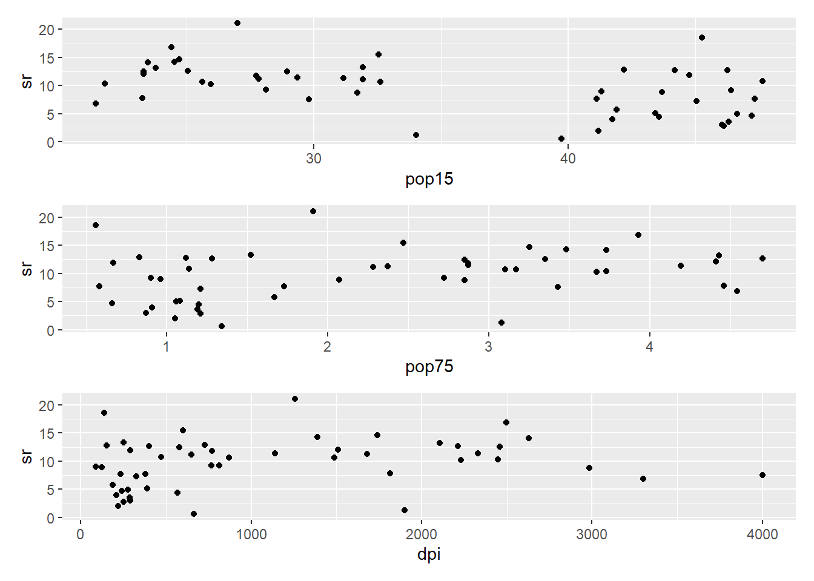
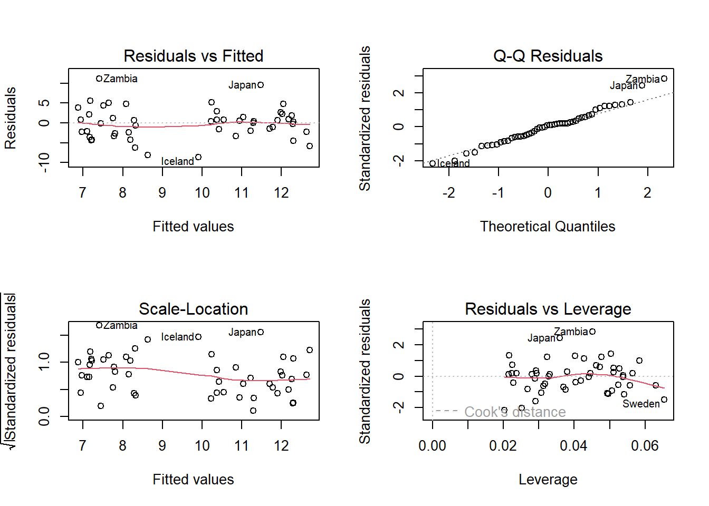
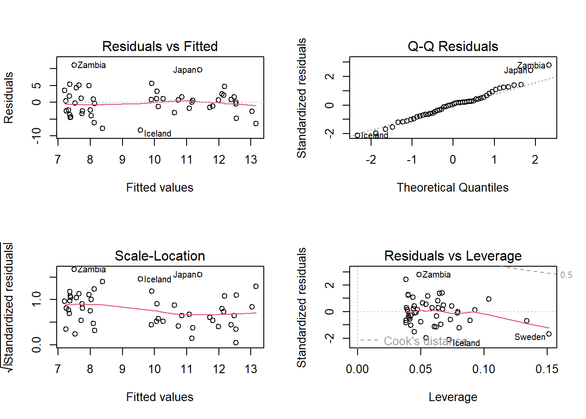
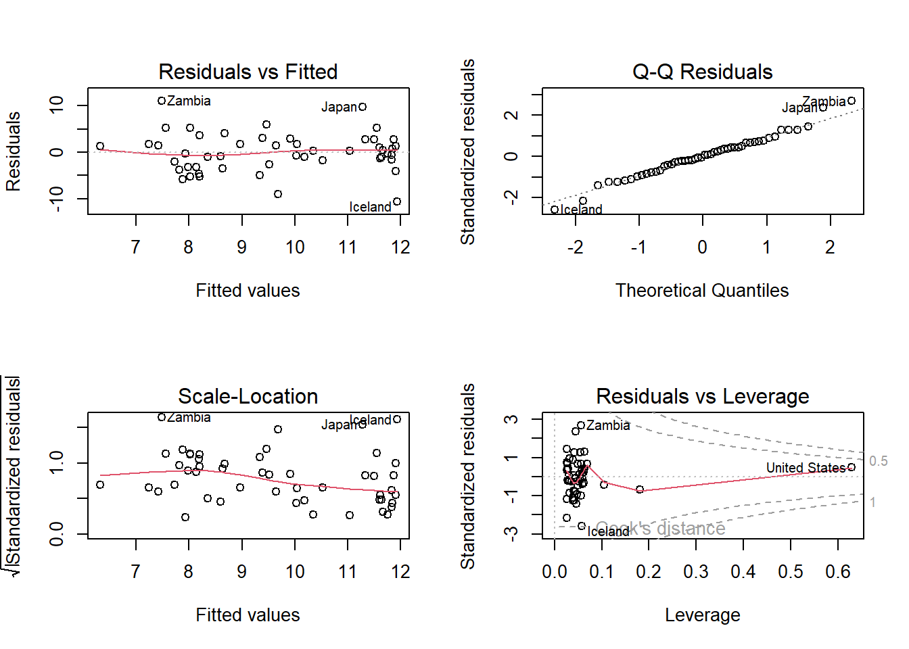
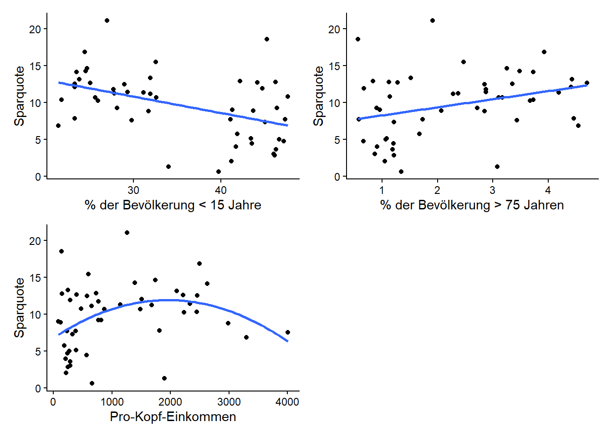

lcs <- LifeCycleSavingsStatistik 3: Übung
Lineare und polynomische Regression
Aufgabenbeschreibung
In R gibt es zahlreiche eingebaute Datensätze. Diese sind direkt in R verfügbar und können ohne zusätzliche Downloads oder Installationen genutzt werden. In dieser Übung verwenden wir den Datensatz LifeCycleSavings. Du kannst den Datensatz z.B. mit folgendem Befehl als Objekt laden:
Der Datensatz enthält Informationen über die Sparquoten in 50 Ländern:
srSparquote (Savings Ratio; Anteil des Einkommens der gespart wird in Prozent)pop15Prozentsatz der Bevölkerung unter 15 Jahrenpop75Prozentsatz der Bevölkerung über 75 JahrendpiPro-Kopf-Einkommen
Du sollst nun untersuchen, ob und wie Sparquote von den anderen drei Variablen abhängt. Teste für jede erklärende Variable einzeln auf lineare und quadratische Zusammenhänge. Stelle die Ergebnisse grafisch dar und verfasse einen ausformulierten Methoden- und Ergebnisteil.
Lösung Übung 3
Demoscript herunterladen (.qmd)
library(ggplot2)
library(patchwork)Daten anschauen
str(lcs)'data.frame': 50 obs. of 5 variables:
$ sr : num 11.43 12.07 13.17 5.75 12.88 ...
$ pop15: num 29.4 23.3 23.8 41.9 42.2 ...
$ pop75: num 2.87 4.41 4.43 1.67 0.83 2.85 1.34 0.67 1.06 1.14 ...
$ dpi : num 2330 1508 2108 189 728 ...
$ ddpi : num 2.87 3.93 3.82 0.22 4.56 2.43 2.67 6.51 3.08 2.8 ...summary(lcs) sr pop15 pop75 dpi
Min. : 0.600 Min. :21.44 Min. :0.560 Min. : 88.94
1st Qu.: 6.970 1st Qu.:26.21 1st Qu.:1.125 1st Qu.: 288.21
Median :10.510 Median :32.58 Median :2.175 Median : 695.66
Mean : 9.671 Mean :35.09 Mean :2.293 Mean :1106.76
3rd Qu.:12.617 3rd Qu.:44.06 3rd Qu.:3.325 3rd Qu.:1795.62
Max. :21.100 Max. :47.64 Max. :4.700 Max. :4001.89
ddpi
Min. : 0.220
1st Qu.: 2.002
Median : 3.000
Mean : 3.758
3rd Qu.: 4.478
Max. :16.710 p1 <- ggplot(lcs, aes(x = pop15, y = sr)) +
geom_point()
p2 <- ggplot(lcs, aes(x = pop75, y = sr)) +
geom_point()
p3 <- ggplot(lcs, aes(x = dpi, y = sr)) +
geom_point()
p1 + p2 + p3 +
plot_layout(ncol = 1, nrow = 3)
-> Zusammenhänge sind zu erahnen, aber die Streuung ist gross.
Modelle erstellen
# Einfaches lineares Modell
lm_pop15 <- lm(sr ~ pop15 , data = lcs)
# Modell mit quadratischem Term
lm_q_pop15 <- lm(sr ~ pop15 + I(pop15^2), data = lcs)
# Einfaches lineares Modell
lm_pop75 <- lm(sr ~ pop75, data = LifeCycleSavings )
# Modell mit quadratischem Term
lm_q_pop75 <- lm(sr ~ pop75 + I(pop75^2), data = lcs)
# Einfaches lineares Modell
lm_dpi <- lm(sr ~ dpi , data = LifeCycleSavings )
# Modell mit quadratischem Term
lm_q_dpi <- lm(sr ~ dpi + I(dpi^2), data = LifeCycleSavings) Modell-Outputs anschauen
summary(lm_pop15)
Call:
lm(formula = sr ~ pop15, data = lcs)
Residuals:
Min 1Q Median 3Q Max
-8.637 -2.374 0.349 2.022 11.155
Coefficients:
Estimate Std. Error t value Pr(>|t|)
(Intercept) 17.49660 2.27972 7.675 6.85e-10 ***
pop15 -0.22302 0.06291 -3.545 0.000887 ***
---
Signif. codes: 0 '***' 0.001 '**' 0.01 '*' 0.05 '.' 0.1 ' ' 1
Residual standard error: 4.03 on 48 degrees of freedom
Multiple R-squared: 0.2075, Adjusted R-squared: 0.191
F-statistic: 12.57 on 1 and 48 DF, p-value: 0.0008866summary(lm_q_pop15)
Call:
lm(formula = sr ~ pop15 + I(pop15^2), data = lcs)
Residuals:
Min 1Q Median 3Q Max
-8.2918 -2.6062 0.2732 1.8186 11.0642
Coefficients:
Estimate Std. Error t value Pr(>|t|)
(Intercept) 22.399363 13.358692 1.677 0.100
pop15 -0.522473 0.806247 -0.648 0.520
I(pop15^2) 0.004268 0.011455 0.373 0.711
Residual standard error: 4.067 on 47 degrees of freedom
Multiple R-squared: 0.2098, Adjusted R-squared: 0.1762
F-statistic: 6.241 on 2 and 47 DF, p-value: 0.003946-> Ein linearer negativer Zusammenhang ist vorhanden.
-> Kein quadratischer Zusammenhang.
summary(lm_pop75)
Call:
lm(formula = sr ~ pop75, data = LifeCycleSavings)
Residuals:
Min 1Q Median 3Q Max
-9.2657 -3.2295 0.0543 2.3336 11.8498
Coefficients:
Estimate Std. Error t value Pr(>|t|)
(Intercept) 7.1517 1.2475 5.733 6.4e-07 ***
pop75 1.0987 0.4753 2.312 0.0251 *
---
Signif. codes: 0 '***' 0.001 '**' 0.01 '*' 0.05 '.' 0.1 ' ' 1
Residual standard error: 4.294 on 48 degrees of freedom
Multiple R-squared: 0.1002, Adjusted R-squared: 0.08144
F-statistic: 5.344 on 1 and 48 DF, p-value: 0.02513summary(lm_q_pop75)
Call:
lm(formula = sr ~ pop75 + I(pop75^2), data = lcs)
Residuals:
Min 1Q Median 3Q Max
-9.6125 -3.2081 0.1644 2.2641 11.5023
Coefficients:
Estimate Std. Error t value Pr(>|t|)
(Intercept) 5.9658 2.4752 2.410 0.0199 *
pop75 2.3997 2.3879 1.005 0.3201
I(pop75^2) -0.2608 0.4690 -0.556 0.5808
---
Signif. codes: 0 '***' 0.001 '**' 0.01 '*' 0.05 '.' 0.1 ' ' 1
Residual standard error: 4.325 on 47 degrees of freedom
Multiple R-squared: 0.1061, Adjusted R-squared: 0.06803
F-statistic: 2.788 on 2 and 47 DF, p-value: 0.07172-> Ein linearer postiviver Zusammenhang ist vorhanden.
-> Kein quadratischer Zusammenhang.
summary(lm_dpi)
Call:
lm(formula = sr ~ dpi, data = LifeCycleSavings)
Residuals:
Min 1Q Median 3Q Max
-9.1915 -3.6215 0.4418 2.8304 11.2790
Coefficients:
Estimate Std. Error t value Pr(>|t|)
(Intercept) 8.5682306 0.9414690 9.101 5.04e-12 ***
dpi 0.0009964 0.0006366 1.565 0.124
---
Signif. codes: 0 '***' 0.001 '**' 0.01 '*' 0.05 '.' 0.1 ' ' 1
Residual standard error: 4.416 on 48 degrees of freedom
Multiple R-squared: 0.04856, Adjusted R-squared: 0.02874
F-statistic: 2.45 on 1 and 48 DF, p-value: 0.1241summary(lm_q_dpi)
Call:
lm(formula = sr ~ dpi + I(dpi^2), data = LifeCycleSavings)
Residuals:
Min 1Q Median 3Q Max
-10.663 -2.488 0.032 2.535 11.071
Coefficients:
Estimate Std. Error t value Pr(>|t|)
(Intercept) 6.786e+00 1.207e+00 5.623 9.98e-07 ***
dpi 5.263e-03 2.008e-03 2.620 0.0118 *
I(dpi^2) -1.344e-06 6.028e-07 -2.230 0.0305 *
---
Signif. codes: 0 '***' 0.001 '**' 0.01 '*' 0.05 '.' 0.1 ' ' 1
Residual standard error: 4.243 on 47 degrees of freedom
Multiple R-squared: 0.1396, Adjusted R-squared: 0.103
F-statistic: 3.813 on 2 and 47 DF, p-value: 0.02919-> Kein einfacher linearer Zusammenhang.
-> Ein quadratischer Zusammenhang ist vorhanden.
Modeldiagnostik
# Residualplots
par(mfrow = c(2, 2) )
plot(lm_pop15)
plot(lm_q_pop15)
plot(lm_q_dpi)
Darstellung der Ergebnisse
# Erstellen der Plots
p1 <- ggplot(LifeCycleSavings, aes(x = pop15, y = sr)) +
geom_point() +
geom_smooth(method = "lm", formula = y ~ x, se = FALSE) +
labs(x = "% der Bevölkerung < 15 Jahre",
y = "Sparquote") +
theme_classic()
p2 <- ggplot(LifeCycleSavings, aes(x = pop75, y = sr)) +
geom_point() +
geom_smooth(method = "lm", formula = y ~ x, se = FALSE) +
labs(x = "% der Bevölkerung > 75 Jahren",
y = "Sparquote") +
theme_classic()
p3 <- ggplot(LifeCycleSavings, aes(x = dpi, y = sr)) +
geom_point() +
geom_smooth(method = "lm", formula = y ~ x + I(x^2), se = FALSE) +
labs(x = "Pro-Kopf-Einkommen",
y = "Sparquote") +
theme_classic()
p1 + p2 + p3 +
plot_layout(ncol = 2, nrow = 2)